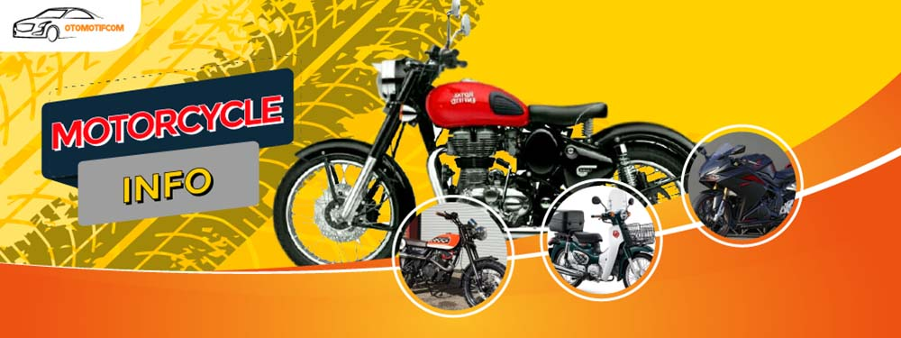
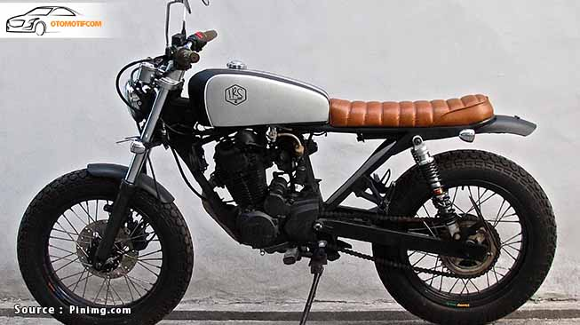
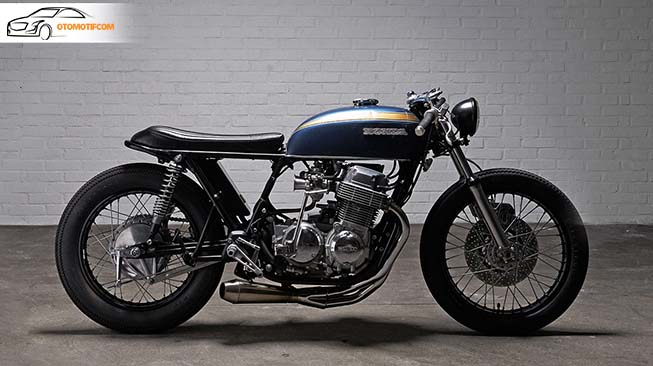

OTOMOTIF TEKHNIK KENDARAAN RINGAN |
||||||||
|
||||||||
Otomotif WorkshopWorkshop equipment merupakan berbagai perlengkapan yang digunakan di bengkel dalam hal ini bengkel otomotif. Workshop equipment bukan perlengkapan utama untuk melakukan berbagai perawatan atau perbaikan. Namun fungsi workshop equipment hanya bersifat untuk mempermudah berbagai pekerjaan yang ada di bengkel. Terdapat berbagai jenis atau macam workshop equipment yang terdiri dari berbagai peralatan dan perlengkapan. Jenis workshop equipment diantaranya yaitu wheel balancer, tyre changer, car lift, hydraulic press, dan lain sebagainya. Setiap jenis workshop equipment tersebut memiliki fungsi dan penggunaan yang berbeda-beda. Kelengkapan workshop equipment pada bengkel skala kecil tentunnya berbeda dengan bengkel skala besar. Bengkel skala kecil tentunya memiliki peralatan-peralatan penunjang atau workshop equipment yang lebih sedikit daripada bengkel skala besar. Semisal bengkel skala kecil hanya memiliki dongkrak namun bengkel besar memiliki dongkrak dan car lift dan berbagai hal yang lain. Namun penggunaan workshop equipment dalam sebuah bengkel memiliki sifat wajib atau harus. Hal ini bertujuan untuk meningkatkan efisiensi kerja. Untuk lebih jelasnya berikut merupakan macam-macam workshop equipment dan fungsinya dalam bidang otomotif. |
1. Model JapstyleUntuk motor custom jenis Japstyle ini memiliki tampilan yang sangat klasik. Meski begitu, banyak biker yang memilih modifikasi jenis ini untuk diterapkan pada motornya. Style asal Jepang ini mengubah tangki bensin menjadi lebih kecil. Itulah salah satu perbedaan dalam motor custom jenis ini. Jika ingin memodikasi motor ke jenis japstyle yang harus diubah adalah pada bagian rangka motor yang tentunya sudah disesuaikan dengan ukuran tangki yang sudah dicustom dan juga pada dibagian jok dibuat lebih tipis. Custom jenis ini pun tidak perlu untuk menggunakan cover pada bagian mesin, jadi dibiarkan terlihat begitu saja sesuai bentuk mesinnya agar menambahkan kesan klasik pada motor tersebut. Lampu yang digunakan pun dibuat lebih kecil dan memiliki bentuk yang buat. Selain itu pemilihan warna juga menjadi salah satu hal yang sangat penting, karena dominan warna dari custom japstyle itu sendiri lebih banyak menggunakan warna-warna yang terang seperti putih,hijau, merah,kuning dan biru. 2. Cafe RacerCafe Racer merupakan modifikasi motor yang memiliki ciri jok yang rendah dan pada bagian belakang terdapat buntut yang melengkung. |
|||||||
| Workshop, Copyright @2020. | ||||||||